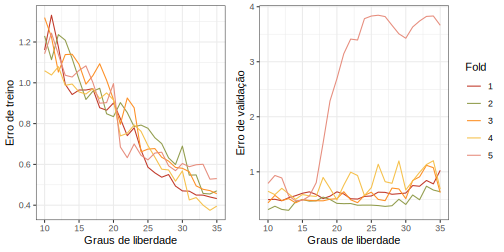
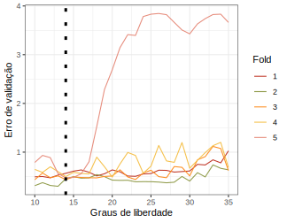

Chapter 2 Validação Cruzada
2.1 Definição
Na falta de uma grande base de dados de teste, utilizada para estimar a taxa de erro do algoritmo, algumas técnicas podem ser aplicadas para quantificar esta taxa usando os próprios dados disponíveis para treino. Uma destas técnicas é a validação cruzada. Ela consiste em calcular a taxa de erro em um certo subconjunto dos dados de treino, separado previamente. Ou seja, estes dados não participam do aprendizado do modelo, e ajudam a ter uma ideia de como ele se comporta ao receber observações não familiares..
2.1.1 Holdout
A técnica conhecida como holdout consiste na divisão dos dados em treino e validação, dada alguma proporção pré-definida, como 80-20 (80% dos dados para treino e 20% para validação) ou 70-30. O algoritmo aprende com o subconjunto de treino e o restante dos dados é usado para predição. O erro proveniente dos dados de validação fornece uma estimativa do erro de teste, que é normalmente quantificado pelo erro quadrático médio para variáveis contínuas e pela taxa de classificação incorreta no caso de variáveis discretas.
2.1.2 K-fold
A técnica de validação cruzada chamada de “k-fold” (‘k dobras’) é quando faz-se a divisão dos dados de treino em k partes iguais, reservando k-1 partes para o treino e 1 parte para o cálculo da medida de erro. Este processo é feito para cada uma das k partes, isto é, todas as partes passam pelo estado de “treino” e “validação”, e os k resultados obtidos para o erro são combinados através de: \[ CV_{k} = \sum_{k = 1}^{K} \frac{n_k}{n} EQM_k,\] Com \(EQM_k = \sum_{i \in C_k} \frac{(y_i - \hat y_i)^2}{n_k}\), para o caso de variáveis contínuas e:
\[ CV_{k} = \sum_{k = 1}^{K} \frac{n_k}{n} Err_k,\]
Onde \(Err_k = \sum_{i \in C_k} \frac{(y_i \neq \hat y_i)}{n_k}\), para quando a variável é discreta, representando a taxa de classificação incorreta.
- O caso específico de n-fold é conhecido como Leave-One-Out. Este nome vem de que em cada etapa do processo, apenas uma observação é deixada de fora do treino.
2.2 Exemplo de Utilização
2.2.1 Validação cruzada para encontrar o número de graus de liberdade
ótimo em suavização por splines.
Suavizadores por spline são uma extensão de regressão polinomial por partes, que consiste no ajuste de polinômios em diferentes regiões de uma variável explicativa \(\mathbf{x}\). Por exemplo, podemos ter um ponto de quebra em \(c\), de form que
\[ y_i = \begin{cases} \beta_{01} + \beta_{11} x_i + \beta_{21} x_{i}^{2} + \beta_{31} x_{i}^{3} &\text{if $x_i < c$}\\ \beta_{02} + \beta_{12} x_i + \beta_{22} x_{i}^{2} + \beta_{32} x_{i}^{3} &\text{if $x_i \geq c$}, \end{cases} \]
onde \(y_i\) é o vetor da resposta e os \(\beta_{md}\) são os coeficientes dos ajustes “antes” e “depois” do ponto \(c\) da variável \(\mathbf{x}\). Esta representação é a de um polinômio cúbico, com \(d = 3\).
A quebra no ponto \(c\) torna os polinômios discontínuos. Ao adicionarmos a restrição de que a curva deve ser contínua, chegamos na suavização por splines. Esta restrição é feita em ambas primeira e segunda derivadas das funções, tornando-as muito suaves.
As novas restrições “libertam” um grau de liberdade cada. Eles podem ser entendidos como a quantidade de coeficientes estimados. No caso dos splines cúbicos com K pontos de quebra, 4 + K coeficientes são estimados.
Splines podem ser reprentados com funções base, por exemplo
\[ y_i = \beta_0 + \beta_1 b_1(x_i) + \beta_2 b_2(x_{i}) + \dots + \beta_{K+3} b_{K+3}(x_{i}) + \epsilon_i. \]
aonde \(b_1, \dots, b_{K+3}\) são as funções. A forma mais comum de representar um spline cúbico é começar com uma função base de um polinômio cúbico e adicionar uma função truncada por ponto de quebra. Esta função, por sua vez, pode ser definida como
\[ h(x, \epsilon) = (x - \epsilon)_{+}^{3} = \begin{cases} (x - \epsilon)^{3} &\text{if $x > \epsilon$}\\ 0 &\text{otherwise} \end{cases} \]
aonde \(\epsilon\) é o ponto de quebra. A adição do termo truncado leva à discontinuidade apenas a partir da terceira derivada da função, levando às restrições desejadas: a função seraaá contínua, com primeira e segunda derivadas contínuas em cada ponto de quebra.
Estamos usando os splines cúbicos pois podemos verificar como a função se comporta ao variarmos os graus de liberdade (ou pontos de quebra, uma vez que GL = 4 + pontos de quebra). A ideia é usar validação cruzada para encontrar o número de graus de liberdade ideal para o problema.
Considere agora os seguintes dados: uma medida de energia e uma de dançabilidade extraídas com a API do Spotify para as músicas da playlist chamada “New Music Friday” de 04 de janeiro de 2019. A relação entre estas duas variáveis vai ser modelada a seguir com um spline suavizador:
library(tidyverse)
library(splines)
library(ggpomological)
library(patchwork)
# Carregando dados e construindo gráficos
df <- read.table("data/playlist_songs.txt")
p1 <- df %>%
ggplot(aes(energy, danceability)) +
geom_point(colour = '#f5c04a') +
geom_smooth(se = FALSE, colour = '#2b323f',
method="lm",
formula=y ~ ns(x, 5))+
labs(x = "", y = "", title = "Graus de Liberdade = 5") +
theme_bw()
p2 <- df %>%
ggplot(aes(energy, danceability)) +
geom_point(colour = '#f5c04a') +
geom_smooth(se = FALSE, colour = '#2b323f',
method="lm",
formula=y ~ ns(x, 15))+
labs(x = "", title = "Graus de Liberdade = 15", y = "Dançabilidade") +
theme_bw()
p3 <- df %>%
ggplot(aes(energy, danceability)) +
geom_point(colour = '#f5c04a') +
geom_smooth(se = FALSE, colour = '#2b323f',
method="lm",
formula=y ~ ns(x,25))+
labs(y = "", title = "Graus de Liberdade = 25", x = "Energia") +
theme_bw()
p1 + p2 + p3 + plot_layout(nrow = 3)Figure 2.1: Exemplos da variação da quantidade de graus de liberdade do suavizador.
Claramente, quanto mais graus de liberdade, mais a curva corre atrás dos dados. Se queremos um bom ajuste, é preciso avaliar o quanto podemos deixar que a curva se ajuste aos dados sem deixar que ela perca a generalidade. Isto é: é preciso verificar até que ponto a curva ajustada é boa também para prever dados que não foram usados no treinamento. O código a seguir mostra como testar diferentes graus de liberdade usando validação cruzada, ao separar a base em um conjunto para o treinamento do modelo em e um para a validação. Aqui, escolhemos criar 5 diferentes pares de conjuntos, usando usando o que definimos antes como k-fold.
# Criando uma função que recebe o fold que vai ser usado para a
# validação e o grau de liberdade utilizado
fit_spline <- function(fold, freedom){
# Erro de treinamento
d <- df %>% dplyr::filter(ind != fold)
f <- lm(energy ~ ns(danceability, freedom),
data = d)
rss_train <- sum((d$energy - f$fitted.values)^2)
# Erro de validaçao
d <- df %>% dplyr::filter(ind == fold)
pred <- predict(f, newdata = d)
rss_val <- sum((d$energy - pred)^2)
return(list(train = rss_train, val = rss_val))
}
# Criando as combinações de folds e graus de liberdade
cen <- expand.grid(fold = 1:5, l = 10:35)
n <- nrow(df)
k <- 5
df$ind <- ceiling((1:n)/(n/k))
# Aplicando os dois argumentos na função criada anteriormente
res <- purrr::map2(cen$fold, cen$l, .f = fit_spline)
cen <- cen %>% mutate(val = unlist(res %>% map("val")),
train = unlist(res %>% map("train")))
# Mostrando os resultados em gráficos
p1 <- cen %>%
ggplot(aes(l, train)) +
geom_line(aes(colour = factor(fold))) +
scale_colour_pomological() +
guides(colour = FALSE) +
labs(y = "Erro de treino", x = "Graus de liberdade") +
theme_bw()
p2 <- cen %>%
ggplot(aes(l, val)) +
geom_line(aes(colour = factor(fold))) +
scale_colour_pomological() +
labs(colour = "Fold") +
labs(y = "Erro de validação", x = "Graus de liberdade") +
theme_bw()
p1 + p2 + plot_layout(ncol = 2)
Neste caso, podemos ver que para os dados de treino, aumentar a quantidade de graus de liberdade leva à uma melhoria crescente na previsão das observações. Todavia, na amostra de validação o comportamento é diferente, existindo um ponto aonde ter graus de liberdade demais passa a ser prejudicial, pois aumenta o erro de previsão. Para estes dados, um valor bom para os graus de liberdade pode ser encontrado com:
# Encontrado o número de graus de liberdade que gerou o menor erro de
# validação médio entre os 5 folds:
cen %>%
group_by(l) %>%
summarise(m = mean(val)) %>%
arrange(m) %>%
slice(1:5)FALSE # A tibble: 5 x 2
FALSE l m
FALSE <int> <dbl>
FALSE 1 14 0.485
FALSE 2 13 0.500
FALSE 3 15 0.533
FALSE 4 10 0.535
FALSE 5 16 0.540cen %>%
ggplot(aes(l, val)) +
geom_line(aes(colour = factor(fold))) +
scale_colour_pomological() +
labs(colour = "Fold") +
geom_vline(xintercept = 14, linetype = "dotted", size = 1.4) +
labs(y = "Erro de validação", x = "Graus de liberdade") +
theme_bw()
Ou seja, 14 graus de liberdade levaram à menor taxa de erro durante o processo de validação cruzada. Com isso, o método nos ajudou a encontrar um bom valor para os graus de liberdade do modelo.